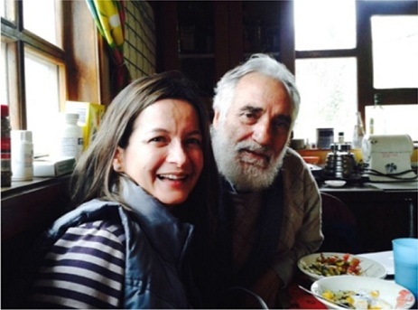

Los tigres del Páramo: mejores que los tigres asiáticos
 Este blog pertenece a la serie de blogs en torno al XVII Foromic que se llevará a cabo este año en Guayaquil del 4 al 6 de noviembre.
Este blog pertenece a la serie de blogs en torno al XVII Foromic que se llevará a cabo este año en Guayaquil del 4 al 6 de noviembre.
Por Lissy Vélez, Especialista del FOMIN en Ecuador.
“Es importante tener sueños y saber compartirlos. Las comunidades se mueven cuando se satisfacen sus necesidades, en pocas palabras –no comen cuento” Esta fue una de las cosas que aprendí cuando sentados alrededor de la mesa en su cálida cocina, el Padre Antonio Polo nos compartió generosamente algunas de sus experiencias en Salinas de Guaranda, ubicada sobre 3.550 msnm del páramo ecuatoriano. Una localidad cuyos ingresos crecieron en un 250% desde el 2000 al 2010, una tasa de crecimiento anual, que ni los tigres asiáticos han podido lograr. El Padre Polo, sacerdote, de origen italiano, llegó a esta comunidad hace 44 años y ha sido el gestor de una transformación excepcional. Los salineros vivían en condiciones de extrema pobreza dedicados a la explotación de las minas de sal y a una incipiente actividad ganadera; hoy está conformada por un conglomerado de empresas comunitarias relacionadas con la elaboración de quesos, embutidos, hongos deshidratados, confites, artesanía con lana de alpaca, entre otros. Entendí que el desarrollo comunitario tiene dos fases: La primera es evolutiva: Se promueve el ahorro, luego viene el crédito, se fortalece la administración –porque cuando hay recursos que cada individuo saca de su bolsillo, todos toman parte del cuidado del bien común. En estos procesos, las individualidades tienen un rol protagónico en el sistema comunitario! Las empresas sociales tienen otra mística, el emprendimiento y la creación de estas unidades de negocio son un medio para generar empleo y hacer crecer el pastel del bien común; deben ser rentables para garantizar su sostenibilidad, pero no es el fin que persiguen. La segunda fase es la disruptiva y para esto es clave abrir las puertas a todas las ideas, algo que sin duda podría fomentar la innovación en comunidades rurales. No importa cuántos pasen por tu puerta con ideas, probablemente la mayoría no funcionen, pero si no dejas la puerta abierta, te perderás la oportunidad de que llegue el adecuado en el momento preciso. Como nos lo contó el Padre Polo cuando mencionó “Tener las puertas siempre abiertas”. Lo vimos en su cocina, donde entraban y salían voluntarios de distintas nacionalidades, -como Juan, por su casa-. Y otra anécdota que nos reforzó esta idea fue cuando nos habló de la llegada en 1978, del suizo José Dubach, un experto en quesos maduros, que no solo les enseñó el proceso de fabricación sino a sentirse dignificados con su trabajo. Es importante esperar con paciencia que surjan los buenos líderes para que se apropien de las iniciativas. Estamos de acuerdo que los líderes tienen características innatas pero siempre requieren formación y alguno que otro truco para sacarlos a la luz, porque tendemos a confundirlos con la voz que más se escucha. Finalmente hablamos de la sostenibilidad. Podrán las nuevas generaciones que no conocieron el Salinas de antes tener la misma mística? Sera la cálida cocina del Padre Polo el espacio adecuado para que los jóvenes generen y compartan sus ideas disruptivas? Sin duda generar aprendizajes y compartirlos es una de las actividades más emocionantes del FOMIN, parte del Grupo BID que busca apoyar ideas innovadoras que tengan impacto y puedan ser replicadas para mejorar la vida de los ecuatorianos.
El FOROMIC representa un espacio para compartir conocimientos y este año que se celebra en Ecuador bajo el lema “Finanzas Inclusivas: Modelo de Negocios para todos” será una oportunidad que no podrán perderse!


Fotos tomadas por el Equipo FOMIN en su última visita de seguimiento en Salinas de Guaranda, donde se ejecuta la cooperación técnica Programa “TIC para Fortalecer Negocios de las PYMES Asociativas del Consorcio Nacional de Lácteos”, que busca mejorar la competitividad de queseras comunitarias rurales a través del acceso a tecnología.